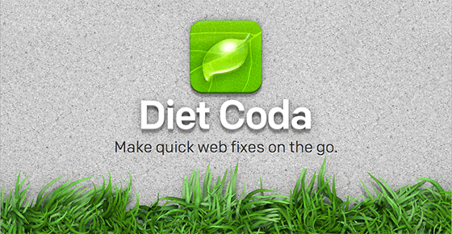

Nitrous Desktop Available for Windows
Windows users rejoice! Last week we announced the release of Nitrous Desktop for Windows. Previous only available to Mac users, Windows users can now use their favorite editor locally to edit code on their Nitrous.IO boxes in the cloud.

What can Nitrous Desktop do for you? Take a look at some features Nitrous Desktop offers:
-
File Sync: Sync your data locally and work with your favorite text editor (e.g. Sublime Text).
-
Port Forwarding: You can enable port forwarding in order to allow network communications within your Nitrous box to be forwarded to your private local area network.
-
Start/Stop Boxes: Start and Stop your Nitrous boxes within app.
-
Web IDE Access: Quickly access the web IDE and terminal for development.
Download Nitrous Desktop
Get Started with PHP
We recently introduced PHP as a default box template. The template comes pre-installed with PHP5, Apache2, MySQL, Composer, and many other tools.
To install PHP on an existing box, check out the Autoparts package manager. You can install PHP5, Apache2, Composer, and other tools and databases like MySQL in just seconds. Read our PHP guide to help you get started.
If you're looking to install other frameworks such as Laravel, Phalcon, Symfony, or Yii, follow along with the official installation documentation on each framework's website. Many of these frameworks can be installed just as they are documented, but you may need to view our PHP FAQ's for any configuration help.
New Features and Tutorials
We have included many new tutorials and updates this month. Read below to see what you may have missed.
|
|

|
Emailing with Sendgrid
SendGrid replaces your email infrastructure, so you don't have to build, scale, and maintain email servers on your own.
Follow the tutorial on our blog post for help on getting setup.
|
|

|
Deploy to IBM BlueMix
We will show you how to connect your BlueMix account to Nitrous.IO and push a NodeJS app into production on BlueMix.
Read our blog post for guide on deploying a sample app to BlueMix.
|
|
|
Code on Your iPad with Diet Coda

At Nitrous.IO, we love Panic and the amazing products that they have shipped over the years. One of the more interesting products they've launched recently is Diet Coda: a world-class code-editing tool for the iPad.
Diet Coda is aimed at developers who have a server setup and want to make quick fixes on their server using an iPad. With Nitrous.IO's dev environments that are accessible from anywhere, Diet Coda can be used not just for quick fixes, but for full-blown application development. Read our blog post on how you can connect Diet Coda to your Nitrous.IO box.
|
|